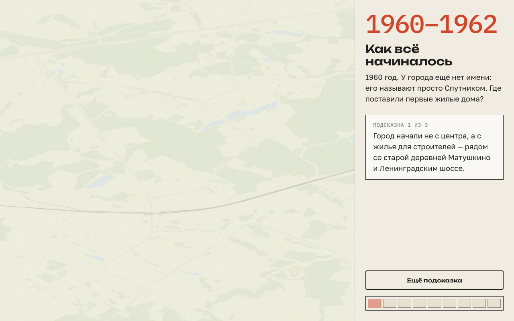
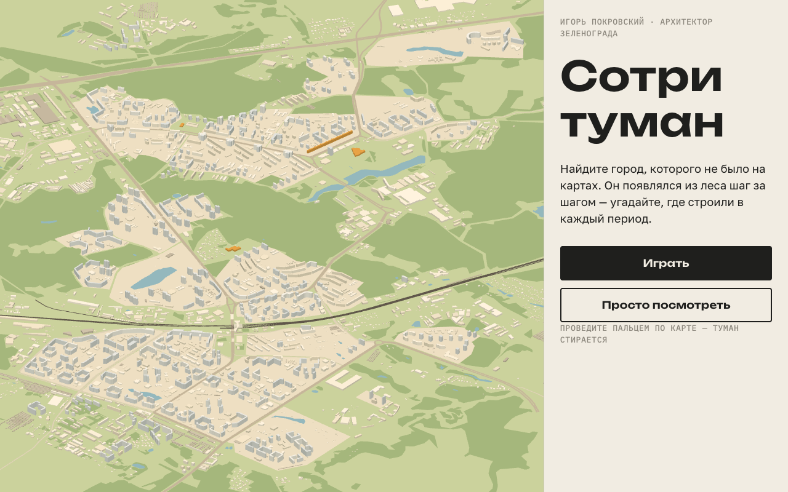

Проведите пальцем по кальке
Здесь в те годы ещё шумел лес
Калька вернулась. Новая подсказка — справа.
СКАН ГЕНПЛАНА 1971 · ЛИНИИ ПОВЕРХ КАРТЫ, 60%
1960197019801990200020102020
ДЕВЯТИЭТАЖКИ — В ГЛУБИНЕ 4-ГО МКР
ЦЕНТРАЛЬНЫЙ ПРОСПЕКТ
ЛОТОК · ПАРНЫЕ 17-ЭТАЖНЫЕ БАШНИ
МАРШРУТ
{{ route.name }}
{{ p.n }}{{ p.name }}
QR
Наведите камеру телефона
ИГОРЬ ПОКРОВСКИЙ · ГЛАВНЫЙ АРХИТЕКТОР ЗЕЛЕНОГРАДА 1964–2002
Сотри туман
Город, которого не было на картах, появлялся из леса шаг за шагом. Сотрите кальку там, где, по-вашему, его строили.
9 ЭТАПОВ · ~3 МИНУТЫ
1964
—1967
Приходит архитектор
Первые кварталы уже стоят у шоссе. Куда город шагнул дальше?
ПОДСКАЗКА {{ hint }} ИЗ 3
{{ hintText }}
— И. П.
{{ heatLabel }}
ЭТАП 4 ИЗ 9
1970
—1972
Двигаем коробки
Проспект хотели застроить обычными девятиэтажками. Покровский предложил подождать — и нашёл проект парных 17-этажных башен. Поставьте их вдоль проспекта.
К визиту Никсона в мае 1972 года башни сдали досрочно. Визит отменили.
ПОСТАВЛЕНО {{ placedCount }} ИЗ 4
ЭТАП 6 ИЗ 9 · ОСОБЫЙ
1971
Город целиком
{{ genText }}
«…построить город такого размера. А это фактически областной город: 120 тысяч за 12 лет».
И. ПОКРОВСКИЙ, 1976
9 ИЗ 9 ЭТАПОВ
Город найден
{{ hintsN }}
{{ hintsWord }}
ВОЗЬМИТЕ МАРШРУТ С СОБОЙ

{{ secretText }}
ЭКСКУРСИЯ
{{ year }}
{{ tourSel.n }}
{{ tourSel.y }}
Двигайте ползунок — город растёт. Коснитесь булавки, чтобы узнать о здании.
ПОЯВИЛОСЬ
ЭТАП 3 · {{ pageN }} ИЗ 3
ФОТО: И. ПОКРОВСКИЙ, 1960-е · ПОДБЕРЁТ КОМАНДА

АРХИВНОЕ ФОТО КОРП. 701 / 707
QR
Вся история и маршрут — в вашем телефоне
Июль 1964. Приходит Покровский
ГЛАВНЫЙ АРХИТЕКТОР 1964–2002
Город уже строится по типовым проектам — изменить сами дома почти нельзя. Зато можно решить, где и как они встанут. Этим Покровский и займётся на следующие 38 лет.
НЕОЧЕВИДНЫЙ ФАКТ
Он с увлечением двигал «коробки» будущих зданий по макету, чтобы они лучше вписались в ландшафт.
Дом-«Флейта»
КОРП. 360 · 1967–1970
Ф. Новиков (гл. арх.), И. Покровский, Г. Саевич
Жилой дом длиной 516 метров на опорах: 9 этажей и технический, 632 квартиры. Жильё в городе строили только по типовым проектам — «Флейта» единственное исключение.
ГОРОДСКАЯ ЛЕГЕНДА
Иностранцы будто бы сказали: «Русские кладут небоскрёбы на бок». Первоисточник не найден.
Корпуса 701 и 707
7-Й МКР · 1967
Два типовых дома: девятиэтажный 701 и двенадцатиэтажный 707. Город из одинаковых проектов становился разным благодаря расстановке домов по рельефу.
НЕОЧЕВИДНЫЙ ФАКТ
Около 90% зданий Зеленограда — типовые. Своеобразие создавала композиция, а не фасады.
СОТРИ ТУМАНТОЧКА 2 / 4
МАРШРУТ «ЦЕНТР ПОКРОВСКОГО»
Дом-«Флейта»
КОРП. 360 · 1967–1970
В 1960-е жилые дома в Зеленограде можно было строить только по типовым проектам. Единственным исключением стала «Флейта».
Длина дома — 516 метров, в нём 9 жилых этажей и технический, четыре подъезда и 632 квартиры. Дом поднят на опоры. Название придумал Феликс Новиков: форма и конструкция напомнили ему музыкальный инструмент.
Сейчас здесь — экспозиция Музея Зеленограда.
СХЕМА МАРШРУТА · ТАЙЛЫ КАРТЫ
1КЦ «Зеленоград»
2Дом-«Флейта» · вы здесь
3Центральный проспект
4Корпуса 701 и 707
Дальше: Центральный проспект →
Открыть в картах
/m/object/fleyta · 390×844
Страница по QR
Открывается без установки. Сверху — иллюстрация из той же системы, ниже полный текст из
qrText, затем маршрут с текущей точкой и кнопкой к следующей.На телефоне шрифты 16–17 px: читают в руке, а не стоя в метре.